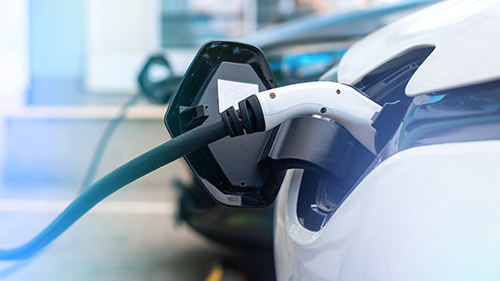

The Rise of Urban
September 29, 2025 by Akeem
Gardening Urban gardening has become increasingly popular in cities around the world.
As populations grow and green spaces shrink, residents are finding creative ways to grow their own fruits,
vegetables, and herbs. Rooftops, balconies, and even windowsills are being transformed into thriving gardens
that not only provide fresh produce but also improve air quality and contribute to mental well-being.
Communities are also benefiting from this trend. Local workshops and garden-sharing programs help
neighbors connect and exchange knowledge about sustainable practices. Urban gardening promotes environmental
awareness while giving people a sense of control over their food sources. The movement is reshaping city landscapes
and encouraging a more sustainable and self-sufficient way of life. Urban gardening promotes environmental
awareness while giving people a sense of control over their food sources. The movement is reshaping city landscapes
and encouraging a more sustainable and self-sufficient way of life.

The Future of Electric Vehicles
September 29, 2025 by Akeem
Electric vehicles (EVs) are no longer a niche product—they are shaping the future of transportation. Advances in
battery technology and charging infrastructure have made EVs more practical and affordable for everyday use.
Governments around the world are offering incentives to encourage the adoption of cleaner vehicles, aiming
to reduce carbon emissions and combat climate change. Governments around the world are offering incentives to
encourage the adoption of cleaner vehicles, aiming to reduce carbon emissions and combat climate change.
The impact of EVs extends beyond individual consumers. Automakers are investing heavily in electric technology,
signaling a major shift in the automotive industry. As charging stations become more widespread and battery efficiency
improves, EVs are poised to become the standard mode of transportation, transforming how people think about mobility
and energy consumption. The impact of EVs extends beyond individual consumers. Automakers are investing heavily in electric technology,
signaling a major shift in the automotive industry. As charging stations become more widespread and battery efficiency
improves, EVs are poised to become the standard mode of transportation, transforming how people think about mobility
and energy consumption.